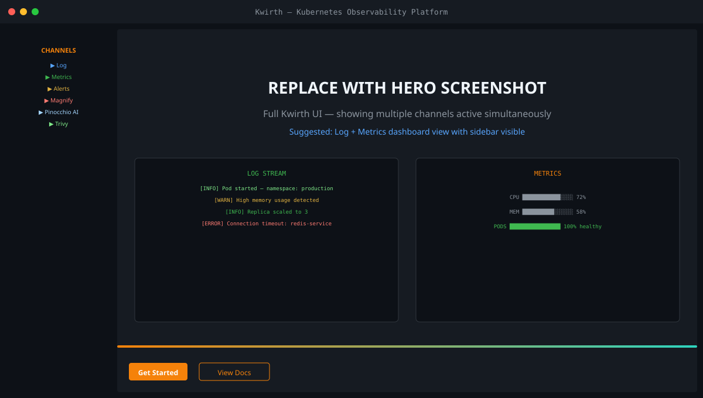
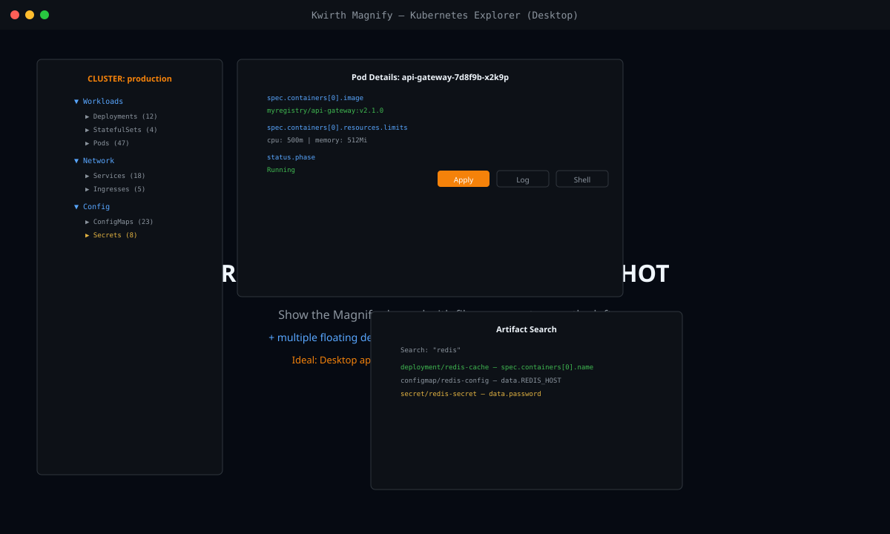
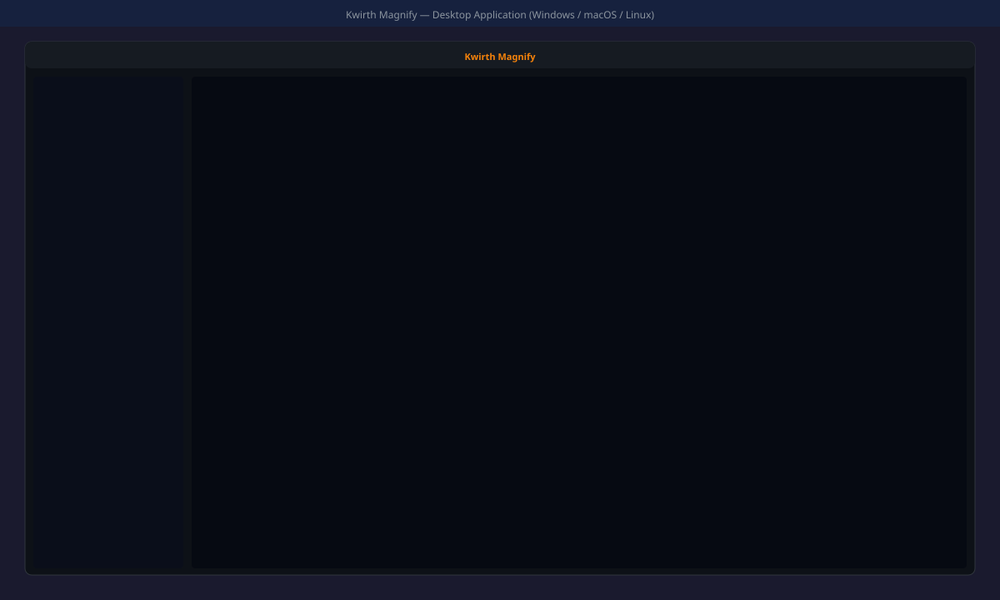
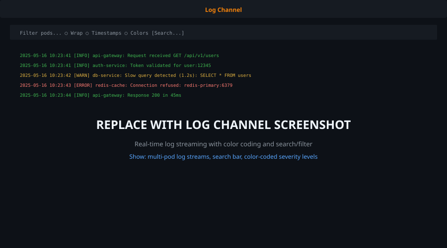
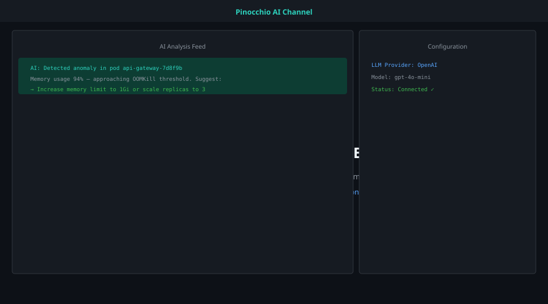
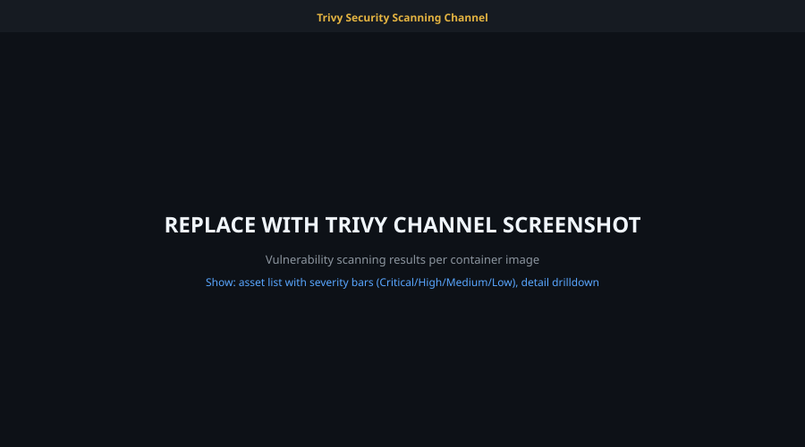
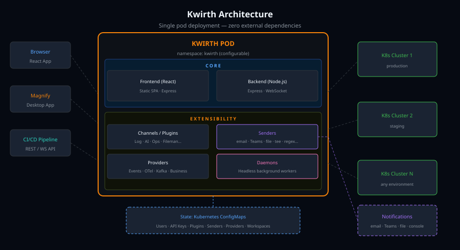

Kwirth brings real-time log streaming, metrics, security scanning, AI analysis, and a full Kubernetes manager — all deployed as a single pod in your cluster.

Each channel is an independent observability & management tool. Mix and match what you need, connect to multiple clusters simultaneously.
Real-time log aggregation from any pod or container across all namespaces. Color-coded severity, search, filter, and full-text search.
Core ChannelLive CPU, memory, and resource metrics per pod and node. Visual dashboards updated in real time via WebSocket.
Core ChannelRule-based alerting on log patterns, metric thresholds, and cluster events. No external alert manager needed.
Core ChannelFull-featured Kubernetes object explorer with multi-window floating panels. Browse, search, and edit any artifact. Also available as a standalone desktop application.
Explorer · DesktopAutonomous AI agent that continuously analyzes your cluster. Detects anomalies, explains errors, and suggests fixes using any LLM provider.
AI PoweredIntegrated Trivy vulnerability scanning per container image. SBOM, CVE details, audit checks, and exposed secrets in one view.
SecurityFull xterm-compatible terminal sessions into any pod or container. Execute commands, run scripts — all through the browser.
Core ChannelBrowse and edit files inside running containers. Modify ConfigMaps and Secrets in-place with syntax highlighting.
Core ChannelVisual graph of all cluster resources — workloads, services, ingresses — with dependency navigation and real-time status.
Core ChannelThe most powerful way to explore, analyze, and manage Kubernetes artifacts. Use it as a channel inside Kwirth, or install it as a standalone desktop application.

Navigate every resource in your cluster — Workloads, Network, Config, Storage, CRDs — organized in a familiar file-manager style tree.
Open multiple artifact detail windows simultaneously. Pin, minimize, resize, and arrange them freely on the canvas.
Search any text across all Kubernetes objects at once. Case-sensitive matching, status field inclusion, and secret decoding built in.
Edit ConfigMaps and Secrets directly in the UI and apply changes with one click. No kubectl, no YAML copy-paste.
Follow references between resources — from a Pod to its ConfigMap, from a Service to its Endpoints — with clickable links in every detail view.
Open a terminal, stream logs, or run Trivy scans directly from the artifact detail panel without switching tabs.
Kwirth Magnify can be installed as a native desktop application — no browser, no cluster access required beyond a Kwirth instance URL. Available for Windows and Linux.
All releases available at github.com/kwirthmagnify/kwirth/releases

A closer look at each channel — real-time data, minimal UI, maximum information density.



No external databases, no message queues, no complex configuration. Just one Helm command.
# Add the Kwirth Helm repo helm repo add kwirth https://kwirthmagnify.github.io/kwirth/helm-charts helm repo update # Install Kwirth in its own namespace helm install kwirth kwirth/kwirth \ --namespace kwirth \ --create-namespace # Open the UI kubectl port-forward -n kwirth svc/kwirth 3883:3883
# Apply the latest manifest directly kubectl apply -f \ https://github.com/kwirthmagnify/kwirth/releases/latest/download/kwirth.yaml # Check pod is running kubectl get pods -n kwirth # Forward the port kubectl port-forward -n kwirth svc/kwirth 3883:3883
# For Docker Desktop (kubeconfig auto-detected) helm repo add kwirth https://kwirthmagnify.github.io/kwirth/helm-charts helm install kwirth kwirth/kwirth \ --namespace kwirth \ --create-namespace \ --set service.type=NodePort # Access at http://localhost:PORT (check service for assigned port) kubectl get svc -n kwirth kwirth
Need more options? See the full Getting Started guide for Ingress, TLS, and multi-cluster setup.
Kwirth runs as a single pod. State is stored in Kubernetes ConfigMaps — no external database needed. Each cluster you monitor is added as a connection from the UI.

Kwirth has a full plugin system for adding new front-end channels and a provider system for injecting new data sources — all hot-reloadable without restarting the pod.
Security vulnerability scanning via Trivy operator integration.
AvailableAI analysis engine — pluggable LLM backend, configurable prompts.
AvailableReference implementation for building custom data providers.
AvailableIngest OTLP traces, metrics, and logs from any OTel-compatible source.
PlannedStream Kafka events into Kwirth channels for unified observability.
PlannedGrafana datasource plugin for embedding Kwirth log streams in dashboards.
PlannedFree, open source, and runs entirely inside or outside your Kubernetes cluster.